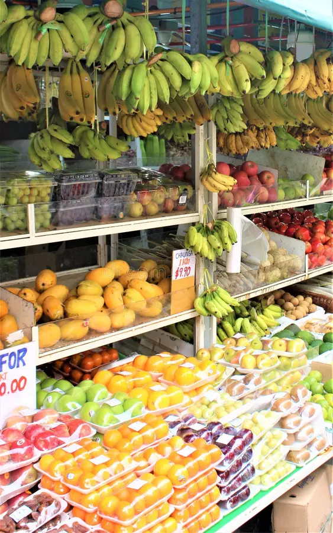

Fruitella was born from a simple yet profound passion: to make fresh, high-quality fruits accessible to everyone. In 2015, our founder Maria Chen walked through a local farmers market and noticed something troubling—most vendors focused on quantity over quality, and consumers were often unaware of where their fruits came from or how they were grown.
Driven by memories of her grandmother's fruit orchard and her commitment to healthy living, Maria founded Fruitella with a clear mission: to become the most trusted fruit vendor in the region by prioritizing freshness, quality, and sustainability above all else. What started as a small market stall with just a handful of vendors has evolved into a thriving community marketplace with relationships spanning multiple local farms and orchards.
Over the past decade, Fruitella has grown from a neighborhood treasure to a recognized brand known for reliability, exceptional taste, and an unwavering commitment to our customers' health and satisfaction. We've built strong relationships with our suppliers, allowing us to ensure that every fruit that bears the Fruitella name meets our exacting standards. Our team has expanded from two people to over twenty dedicated professionals, all united by the same vision: to deliver the finest fruits to our community.
Today, Fruitella represents more than just a business—it's a commitment to transparency, quality, and the belief that everyone deserves access to the best nature has to offer. We continue to innovate while staying true to our roots, investing in sustainable practices and community initiatives that strengthen the bonds between farmers, vendors, and consumers.
